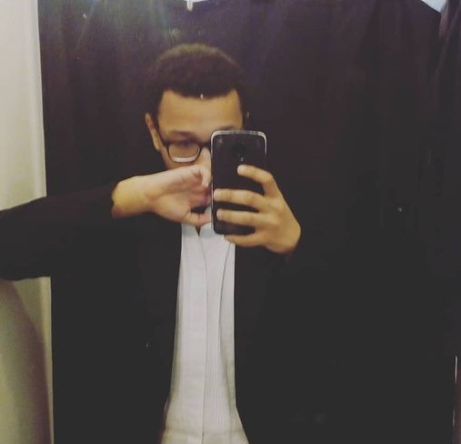

Filipe Lacerda
Desenvolvedor Frontend
Sobre
Opa, meu nome é Filipe Lacerda de Carvalho (só "Lacerda" já basta)!
Tenho 18 anos, nascido e morador do Recife. No momento sou estudante de Analise e Desenvolvimento de Sistemas na Faculdade SENAC aqui na minha cidade, tudo isso por meio de uma bolsa de estudos oferecida pelo Porto Digital no prorama Embarque Digital. Atualmente também me encontro aprendendo e aprimorando minhas habilidades como desenvolvedor Front-end, entre eles: HTML 5, CSS 3 e JavaScript.
Além de estar na procura por um estágio o que seria a minha primeira experiencia profissional na vida (tirando projetos academicos que já fiz e afins).